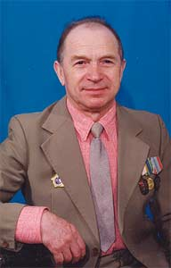

Парфенчик Владимир Маркович
Приехав в посёлок Комсомольский в 1970 году как специалист по материально-техническому снабжению, Владимир Маркович стал не только ключевым организатором комплектации газовых магистралей Западной Сибири, но и душой общественной и поэтической жизни города.

Украшая наш город собой.
Ты, Югорск, самый лучший на свете,
Будем жить мы одною судьбой».
— Из стихотворений В.М. Парфенчика
Три грани служения городу
Стратегическое снабжение
В системе Мингазпрома обеспечил комплектацию более 200 компрессорных цехов и 15 магистральных газопроводов. Награждён орденом «Знак Почёта».
СОТ «Морошка»
Организовал в Югорске первое садоводческое товарищество «Морошка» и бессменно возглавлял его 14 лет, обеспечив семьи газовиков дачными участками.
Летописец в стихах
Посвятил родному северному городу более полусотни проникновенных стихотворений и большую поэму «Югорску 35».
Признание земляков
За разносторонний вклад в промышленное, общественное и культурное развитие удостоен звания «Почётный гражданин города Югорска».